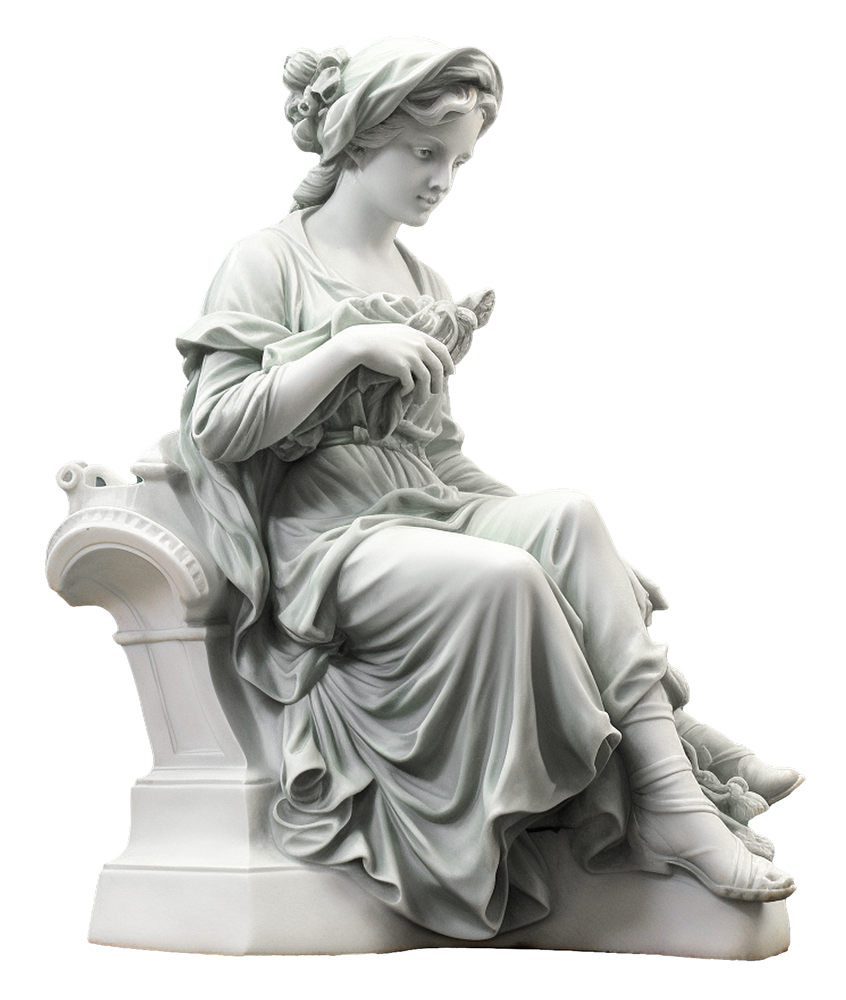

A görög mitológia az ókor egyik legnagyobb öröksége, amely történetek gyűjteménye az
istenek,
természetfeletti lények és hősök életéről. Ezek a mítoszok nemcsak az ókori vallás és
kultúra
részei
voltak, hanem segítettek az embereknek megérteni a világot, választ adva az élet nagy
kérdéseire:
honnan származik a világ? Miért létezik szenvedés és boldogság? Mi a halál értelme?
Az istenek és hősök történetei nemcsak szórakoztattak, hanem erkölcsi és társadalmi
tanításokat
is
közvetítettek. Az istenek hatalma, döntéseik és kapcsolataik tükrözték az emberi
természetet,
miközben iránymutatást adtak a közösségi élethez és a vallási szertartásokhoz. A görög
istenek
egyszerre voltak tökéletes és emberi hibákkal rendelkező lények, akik az Olümposz hegyén
élve
uralták a világ minden aspektusát. Az ókori görögök imáikban fordultak hozzájuk védelemért
és
segítségért, miközben ajándékokkal és szertartásokkal próbálták elnyerni a kegyüket.

Megjelenése a jelenben
A görög mítoszok örökre beépültek a kultúránkba, és máig inspirálják a művészeteket,
irodalmat
és
filmeket. Shakespeare drámái, mint a „Romeo és Júlia,” vagy James Joyce „Ulysses”-e mind
merítettek
a görög mitológiából. Botticelli „Vénusz születése” című festménye és számos modern alkotás
is
visszautal ezekre a történetekre.
A görög istenek a filmvásznat is meghódították. Az 1981-es „Titánok harca” óta számos film
és
sorozat merített ezekből a mítoszokból, mint a „Herkules,” a „Wonder Woman” vagy a „Percy
Jackson”
sorozat. A görög mitológia tehát nem csupán a múlt része, hanem ma is formálja a kultúrát és
az
emberi képzeletet.
Építészeti hatása
A görög isteneknek számos templomot és szentélyt építettek az ókori görögök. Ezek a templomok a
vallásos tiszteletadás központjai voltak, és gyakran a legfontosabb isteneknek, mint például
Zeusznak, Apollónnak, Poseidónnak és Aphroditének voltak szentelve.
A Parthenón az ókori Görögország egyik legismertebb és legfontosabb temploma, amely
Athén városában, az Akropoliszon található. A templom Athéné istennő tiszteletére épült, és az
ókori görög építészet egyik legszebb és legjelentősebb alkotásaként ismert.
Az Akropoliszon található több templom is, köztük az Erechtheion, amely több isten
és hős, például Athéné és Poszeidón tiszteletére készült. A Niké templom (Athéné
Niké temploma) a győzelem istennőjének, Niké-nek szentelték.